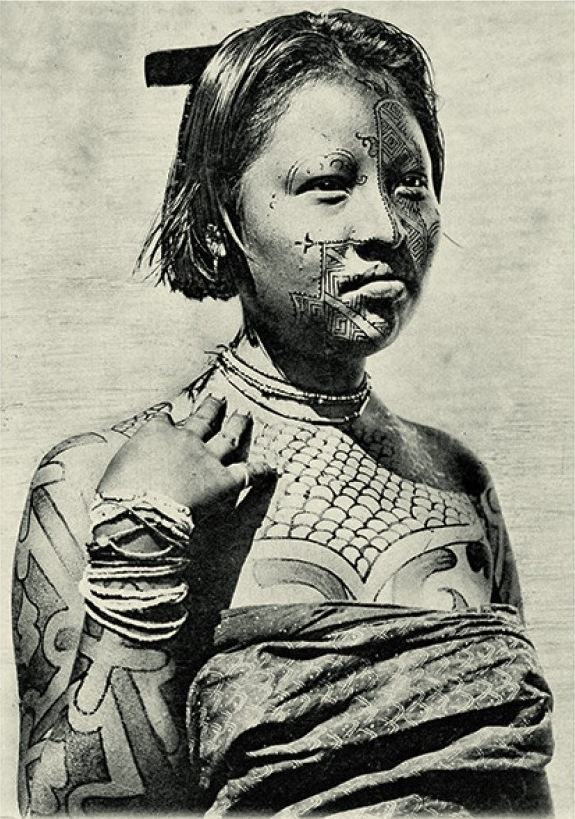

Nações inteiras desapareceram
A frase do começo deste projeto é literal: povos, línguas e nações inteiras foram destruídos até não restar quase vestígio. Esta página mostra o antes e o depois — e quem resiste.
Povos extintos e sua população original
O IBGE reuniu, em sua série "Brasil: 500 anos de povoamento", uma estimativa da população de povos hoje extintos. Cada linha era uma sociedade com língua, organização política e território. A tabela abaixo mostra apenas uma parte: para a maioria dos mais de 1.400 povos que desapareceram, nem o nome foi registrado.
| Povo | Região | População original |
|---|---|---|
| Potiguar | Costa Nordeste | 90.000 |
| Tupinambá do Recôncavo | Bahia | 85.000 |
| Tupiniquim | Ilhéus, Espírito Santo | 55.000 |
| Caeté | Costa Nordeste | 50.000 |
| Tamoio | Cabo Frio | 35.000 |
| Tupiniquim | São Paulo | 35.000 |
| Charrua | Rio Grande do Sul | 35.000 |
| Aimoré (Botocudo) | Ilhéus, Espírito Santo | 30.000 |
| Caeté | Minas Gerais | 30.000 |
| Carijó | São Paulo | 25.000 |
| Carijó | Rio Grande do Sul | 25.000 |
| Tamoio | Rio de Janeiro | 25.000 |
| Guarani | Mato Grosso do Sul | 25.000 |
| Cariri, Caratiú, Icó, Panati e outros | Interior do Nordeste | 25.000 |
| Tupinambá de Cumá | Maranhão | 25.000 |
| Canindé, Genipapo | Piauí/Ceará | 20.000 |
| Omágua | Rio Solimões | 20.000 |
| Carijó | Paraná | 6.000 |
A região Nordeste foi a que mais perdeu povos: 344 etnias extintas, segundo o Cimi.
As línguas: 1.175 viraram ~180
Cada língua indígena é um modo único de organizar o mundo — com gramáticas, classificações de plantas, relações de parentesco e conhecimentos que não existem em nenhum outro lugar. Quando uma língua morre sem documentação, um universo inteiro de pensamento desaparece para sempre.
Como se calcula
O linguista Aryon Dall'Igna Rodrigues calculou 1.175 línguas no Brasil em 1500. Hoje, segundo linguistas do Museu Emílio Goeldi e do Museu do Índio, restam 160 a 180 línguas vivas — o Censo 2010 do IBGE contou 274, incluindo dialetos. Isso significa uma perda de cerca de 1.000 línguas em 500 anos: em média, duas por ano.
Todas as línguas indígenas que sobrevivem no Brasil são consideradas ameaçadas, em maior ou menor grau. A mais falada, o Ticuna, tem cerca de 30 mil falantes; metade das línguas restantes tem menos de 100.
A diversidade que se perdeu
| Conjunto | O que é |
|---|---|
| Tronco Tupi | 10 famílias, incluindo os Tupinambá e os Tupi-Guarani — a família mais espalhada pelo território |
| Tronco Macro-Jê | 10 famílias, dos Jê (Xavante, Kaingang, Kayapó) aos Maxakalí, Krenák, Boróro |
| 19 famílias menores | Sem parentesco entre si o bastante para formar troncos |
| Línguas isoladas | Sem parentesco conhecido com nenhuma outra — são ao menos 10 |
Vivos, e crescendo
Há um lado da verdade que a versão de "povo que vai acabando" esconde: a população indígena brasileira voltou a crescer. Foi de menos de 300 mil em 1991 para mais de 1,69 milhão em 2022. O povo que "ia desaparecer" se recusou a desaparecer.

Resistência não é passado
Em 2000, o movimento indígena refez ao contrário o caminho da invasão e realizou em Porto Seguro a maior conferência indígena já vista. A Constituição de 1988 reconheceu seus direitos originários. Em 2022, o Brasil criou um ministério indígena. A luta não é memória: é presente, e é o motivo pelo qual não se deve dizer "os índios" como quem fala de fósseis.
Agora que você sabe, veja o que te contaram
As narrativas que nos obrigaram a engolir — "descobrimento", "acaso", "índio preguiçoso", "vai acabar" — todas têm refutação documentada.